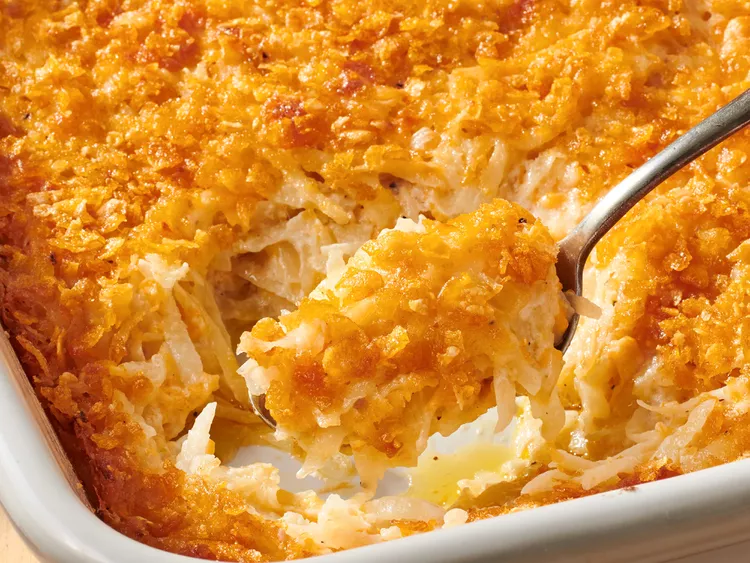

A steaming hot hash brown casserole just like Grandma made it!
Description
This hash brown casserole is the best hash brown dish I've ever had. It's my friend's grandma's recipe from Kentucky! Grandmas in Kentucky sure do know how to cook!
Create this dish at your next get together and fill everyone up with warm potatoes topped with crispy melted cheese.
Ingredients
Frozen Hash Browns
Canned Soup
Cheddar
Sour Cream
Butter
Onion
Seasonings
Cornflakes
Steps
Mix the hash browns, Cheddar, soup, sour cream, a stick of melted butter, onion, and seasonings together.
Transfer to a baking dish, sprinkle with cornflakes, and drizzle with butter.
Bake in the preheated oven until the sauce is bubbly and the top is golden brown.